MapNG
MapNGSince the desktop app launched, five updates have gone out, and 0.2.5 is out today. Here's everything new since then. The website has all of it too, and exports target BeamNG.drive 0.40.
🎨 It looks and feels like BeamNG
MapNG now uses BeamNG.drive's own interface fonts: Noto Sans for text, Overpass for titles and Overpass Mono for numbers. It also uses the game's orange palette and corner shapes, the same way everywhere, in light and dark mode.
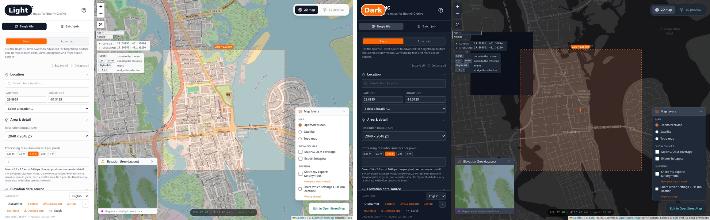
Progress that looks like the game's loading screen
Generate and Export now play out like a level load in BeamNG:
- six stage tiles fill in orange as MapNG works
- a slanted bar runs start to finish for each stage
- the stage name sits big underneath
- the latest steps scroll by with their timings
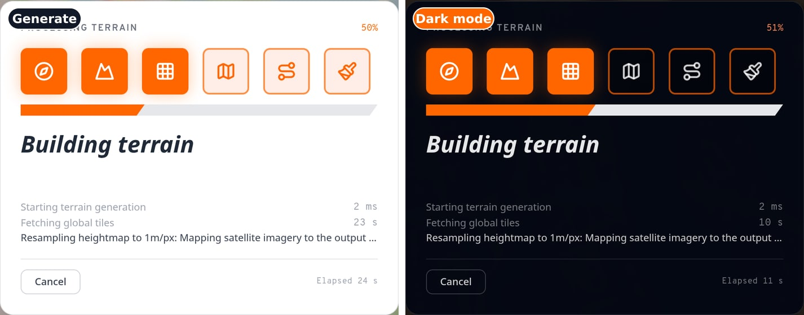
🗺️ A much better 2D map
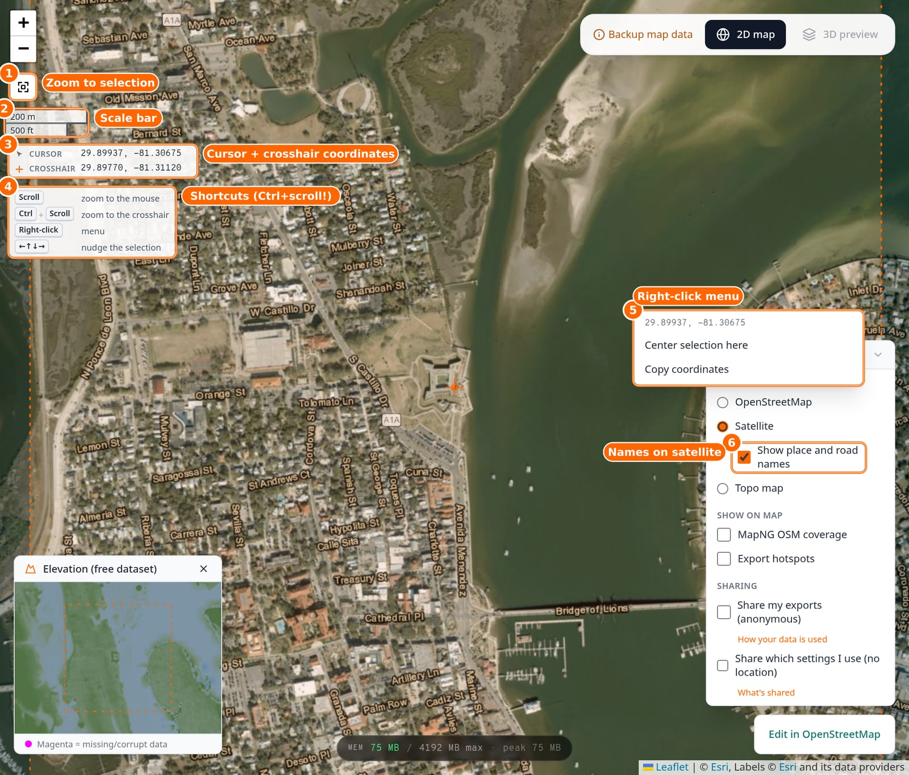
- Zoom to selection. Jump back to your export box from anywhere.
- Scale bar, in km and miles.
- Cursor and crosshair coordinates. See where your mouse is and where your selection is.
- Shortcuts. Ctrl + scroll zooms on the crosshair without moving your selection; a plain scroll still zooms toward the mouse.
- Right-click menu: center the selection here, or copy the coordinates.
- Place and road names on satellite, with a toggle to turn them off.
There's also more you can't see in a screenshot:
- The cursor is now a thin crosshair instead of the grabbing hand.
- Your selection shows its size ("1.02 × 1.02 km"), and the map around it dims once you zoom in.
- The map is one flat world, with no more endless copies when you scroll sideways. The crosshair can still reach every edge, even after a fast swipe.
- The Map layers box is grouped into Map, Show on map and Sharing, and folds away.
🌏 Levels across the date line
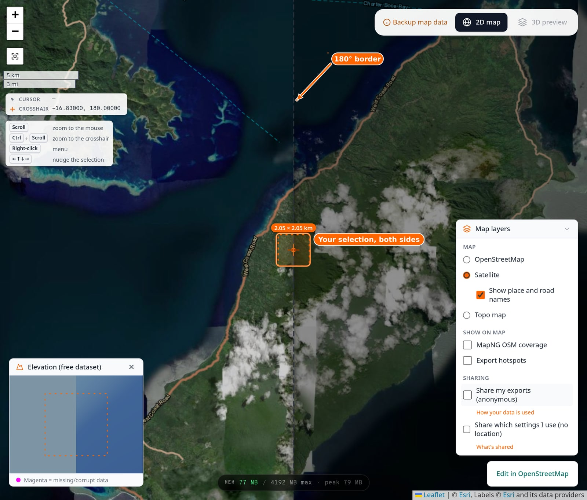
Fiji, the far Aleutians and Chukotka sit right on the 180° line, and they now work properly. The map carries on past the line, dimmed behind a dashed border, so you can see both sides. Every download is split at 180° and stitched back together.
The free elevation data turned out to be broken along 180°: flat placeholder tiles on one side and ocean depths on dry land on the other. MapNG now spots those tiles and rebuilds them from the nearest detail level that has real data, so there's no fake cliff where the line crosses an island.
💧 Real water, and no more creeks on ridges
Real water on the Game texture
On the Game base texture, lakes, rivers and the sea used to be painted blue, and a lot of you didn't like it. They now come straight from the satellite image, sandbars and all.
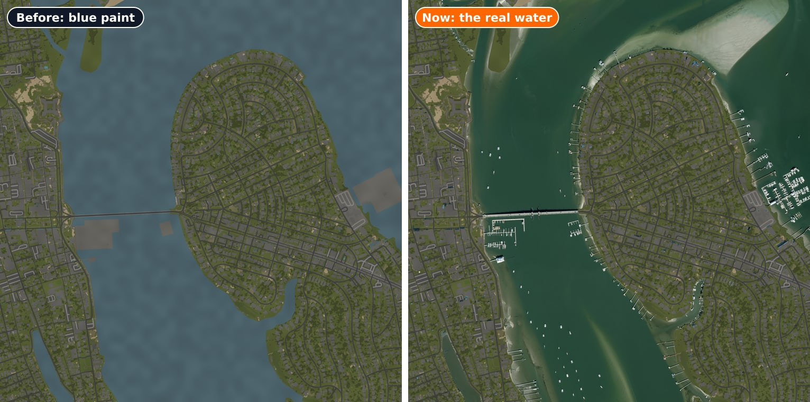
Creeks don't stand on ridges anymore
This one came from a config someone shared. On the free 30 m elevation, a wooded creek came out as a ten-metre ridge, with the water floating on top. It turns out that along forested water, the free data measures the treetops, not the ground. MapNG now keeps water below its banks. It only does this where the water is clearly raised, so real valleys and canyons are left alone.
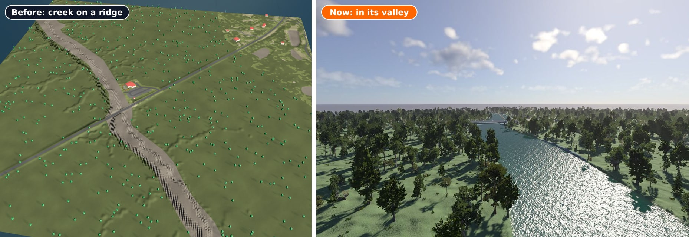
🖥️ Update and Modify your levels, without downloading again
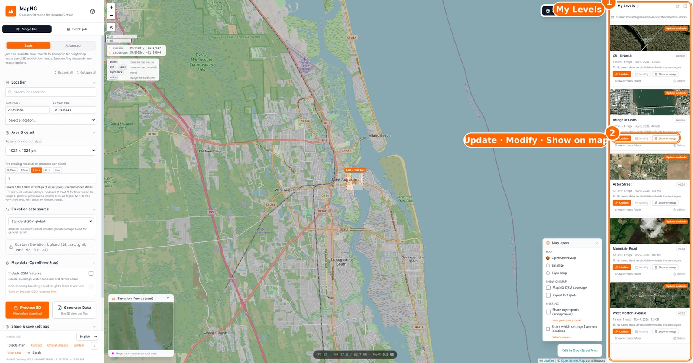
In the desktop app, My Levels lists every MapNG level in your mods folder:
- Update remakes a level with the newest MapNG and its own settings.
- Modify loads it back in so you can change anything (base texture, bridges, terrain edits, content) and export again.
- Each level keeps everything it downloaded (terrain, satellite, OSM, bridge-height lidar, backdrop), so updates work offline and don't spend GPXZ calls.
- Delete sends a level and its saved data to the Recycle Bin.
Big maps are faster too. The heightmap step now runs on every CPU core, so a 16k GPXZ map that used to sit at "Resampling heightmap" for 20+ minutes generates in about a minute and a half. Measured bridge heights from US lidar now work in the desktop app as well.
🔥 Where's everyone building?
The optional Export hotspots overlay shows where the community exports levels: a soft glow when you're zoomed out, and dots you can click once you zoom in.
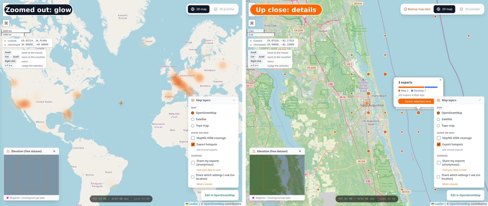
It's opt-in and anonymous: only the ~5 km square of each export is counted, never the exact spot or anything about you. Turn it on with Share my exports in the Map layers box. Full details.
⚖️ How heavy is this level?
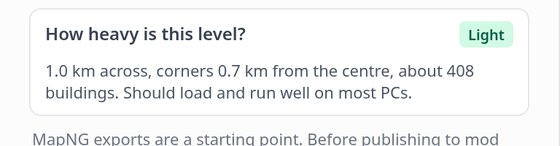
Before you export, a card rates the level from its size, how far its corners are from the centre (BeamNG starts to jitter past about 30 km) and its building count. It only warns; you can always export.
🌍 MapNG's own OpenStreetMap copy is growing
Where MapNG hosts the OSM data itself, map data loads fast and doesn't depend on the public Overpass servers. That copy is now being built for the whole planet. Live today:
- Most of the US west of the Mississippi, south of 41°N
- Mexico and Central America
- Hawaii and the Pacific
- The Great Lakes, New England and eastern Canada
- Utah
- Florida
More regions are going live as they're built. Turn on MapNG OSM coverage in the Map layers box to see exactly where.
🧹 A lot of polish
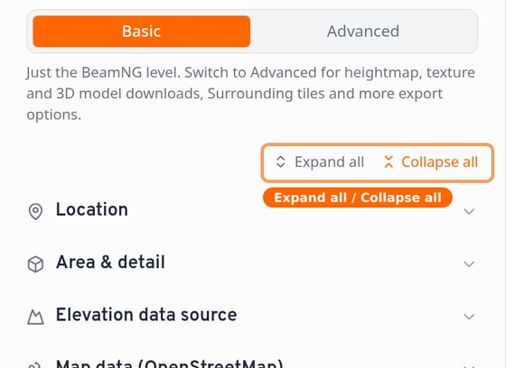
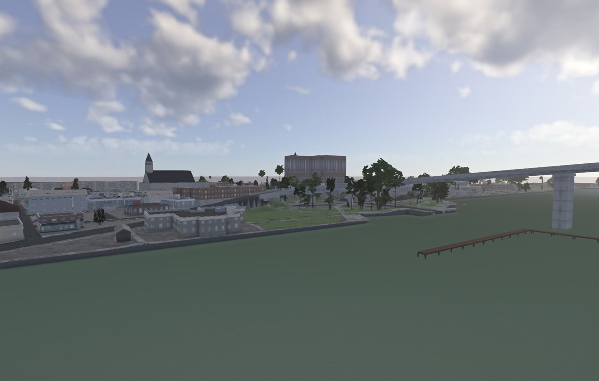
Heads-up: the Windows build still isn't code-signed. If SmartScreen warns you, choose More info, then Run anyway. Code-signing is in progress.
I'd love your feedback on all of this, especially the new look and the progress screens. Post in the MapNG Discord or open a GitHub issue. 🧡